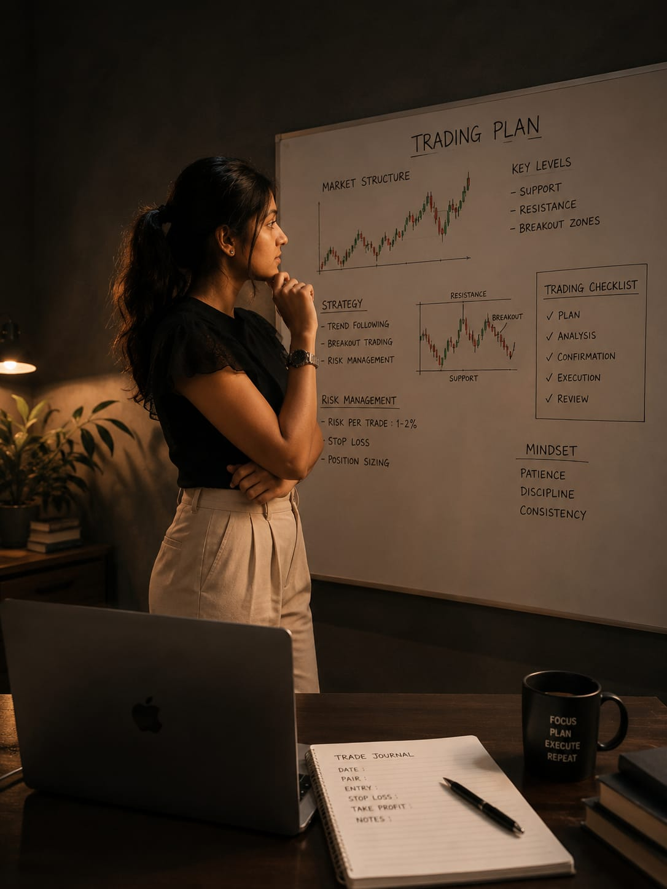

Published by Sneha Bhimini
My freelancing journey has been a continuous learning experience. Every project has allowed me to strengthen my creative thinking, communication, and technical skills while understanding professional expectations.
Working as a freelancer at Alpha Auron Pvt. Ltd. has provided valuable exposure to video editing, content creation, and social media marketing. It has helped me improve my workflow, collaborate with teams, and develop confidence in handling responsibilities.
Throughout this journey, I have enhanced my abilities in content planning, digital branding, audience engagement, project management, and delivering quality work within deadlines. These experiences continue to shape my professional growth.
I look forward to expanding my knowledge, taking on new challenges, and creating impactful digital content while continuously improving as a freelancer and creative professional.